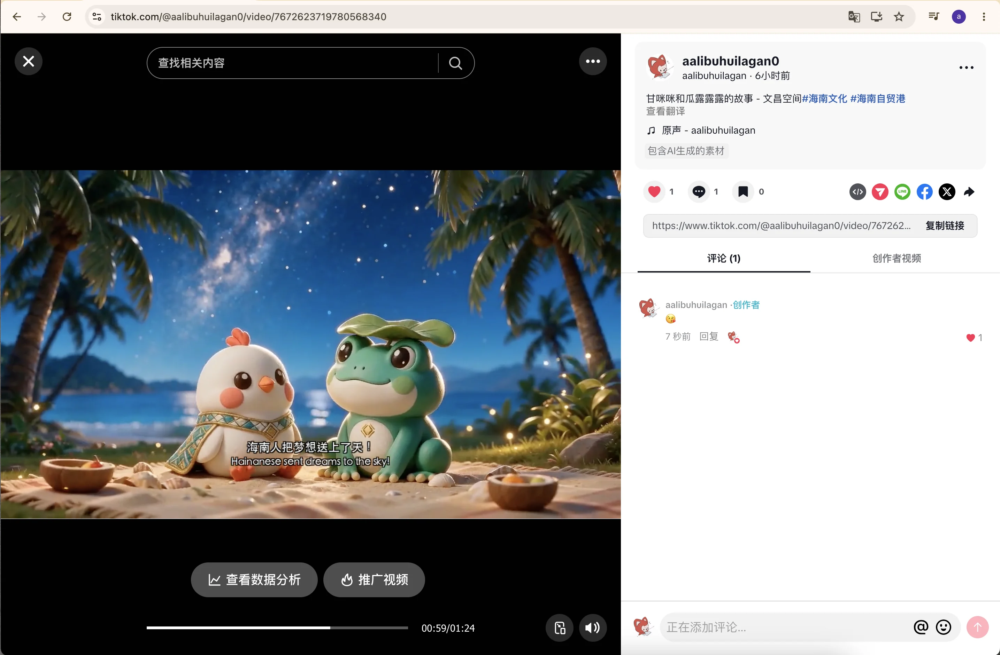
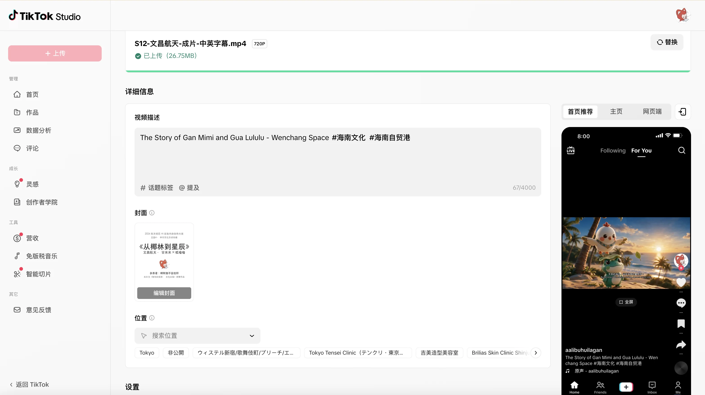

让故事被转发Make the story shareable
社媒传播Social Media
TikTok / Shorts 切片、话题运营与联名提案——用短视频的节奏，让甘米米和呱噜噜在世界各地的信息流里起飞。TikTok / Shorts clips, hashtag campaigns and collab pitches — let the duo take off in feeds around the world.


让故事被转发Make the story shareable
TikTok / Shorts 切片、话题运营与联名提案——用短视频的节奏，让甘米米和呱噜噜在世界各地的信息流里起飞。TikTok / Shorts clips, hashtag campaigns and collab pitches — let the duo take off in feeds around the world.

